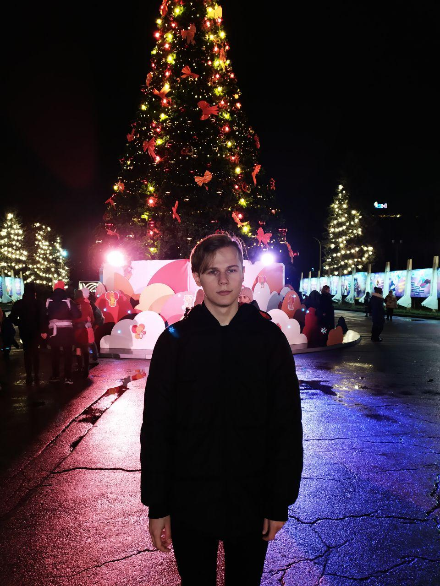

Мене звуть Юра, мені 18 років, навчаюся в Національному Авіаційному університеті, Факультет
аеронавігації, електроніки та телекомунікацій.
Я народився в маленькому місті Кропівницької області, закінчив школу та переїхав до Києва.
Я люблю фільми режисера Квентіна Тарантіно такі як:
Такі книжки мені подобаються:
Я люблю грати у футбол, баскетбол та інші спортивні ігри, тому що спорт - це здоров'я.
Намагаюсь правильно харчуватись, їм багато фруктів та овочів.
Також можу поділитися посиланням на статью про те, як правильно харчуватись:
Посилання
Посилання на мої контакти: Контакти